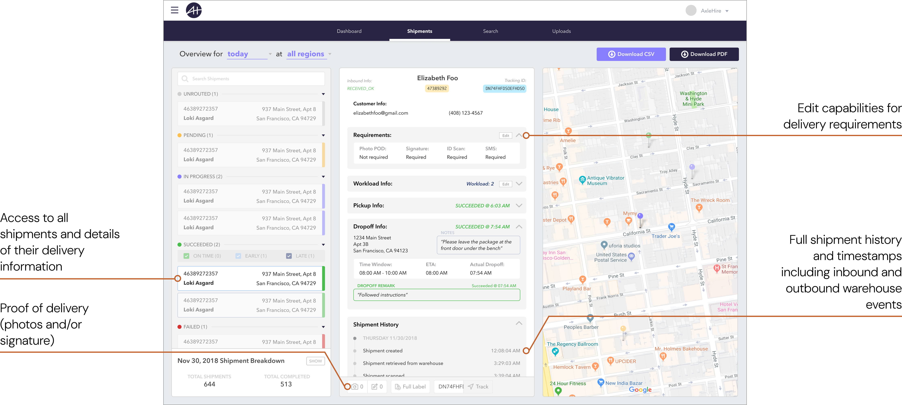
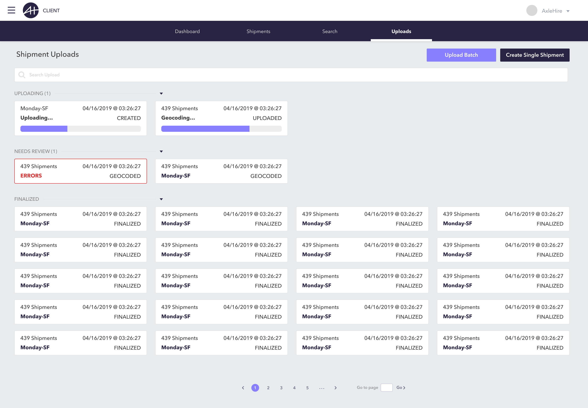
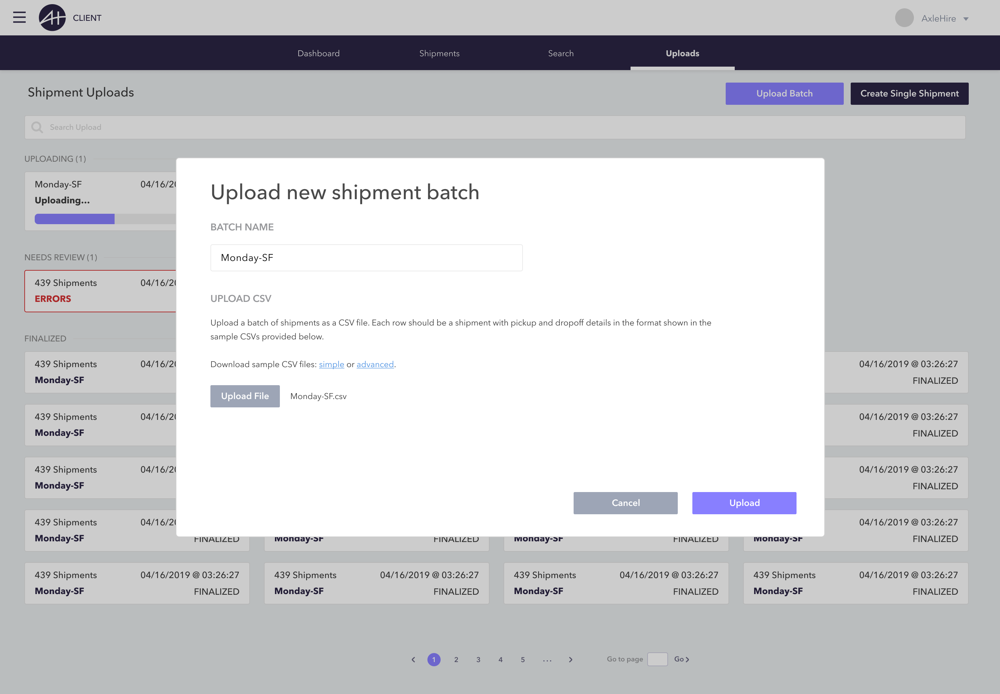
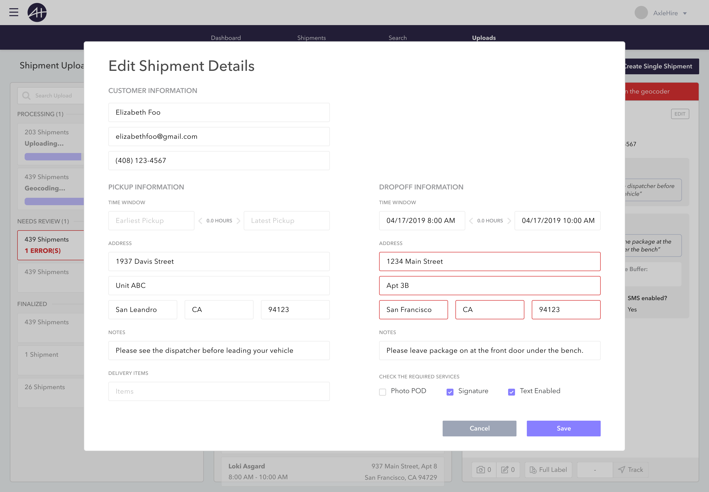
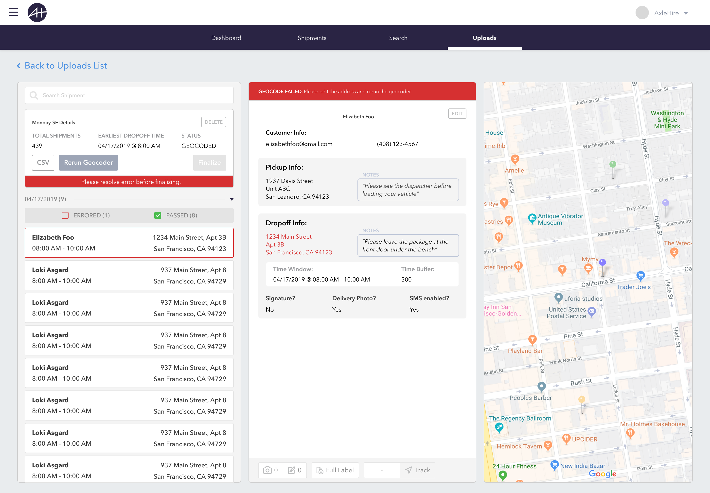

AXLEHIRE (Now JITSU)
AxleHire's enterprise clients — major retailers managing thousands of daily shipments — had no self-service visibility into their delivery operations. Every status check, exception report, and order modification required contacting AxleHire's dispatch team directly. This project designed the company's first client-facing operations portal, giving enterprise customers real-time delivery visibility and automated order ingestion while reducing dispatch support requests by ~80%.
We ran discovery sessions with 6 enterprise client accounts, ranging from a regional grocery chain to a national furniture retailer. Their operations contexts were very different, but their core needs converged on three themes.
The centerpiece of the portal was a live delivery map showing all active routes, their current status, and any exceptions flagged in real time. Clients could filter by region, client account, date range, and exception type — moving from a high-level overview to an individual delivery in two clicks.

We designed an order ingestion interface that accepted any CSV format and used field-mapping logic to automatically match client columns to AxleHire's order schema. Unrecognized fields were surfaced for manual intervention. Validation errors appeared inline, per row, before submission.




The client portal was the project that taught me how much enterprise product design is actually organizational design. The portal didn't just give clients visibility, it redistributed work that had been sitting entirely on AxleHire's internal ops team. That redistribution had implications for team structure and client contracts that went well beyond any individual screen.
The most unexpected outcome was how much the portal changed the client relationship itself. Clients who previously called daily stopped calling not because they didn't have questions, but because the portal answered them before they could form. Several clients reported that having visibility made them more patient with exceptions, not less. Seeing the operational complexity of last-mile delivery in real time gave them context that phone calls never could.
If I were starting this project over, I would have pushed harder for a dedicated exception management workflow earlier. The map view was powerful, but high-volume clients needed a task-oriented exception queue, not a spatial overview, to manage efficiently.